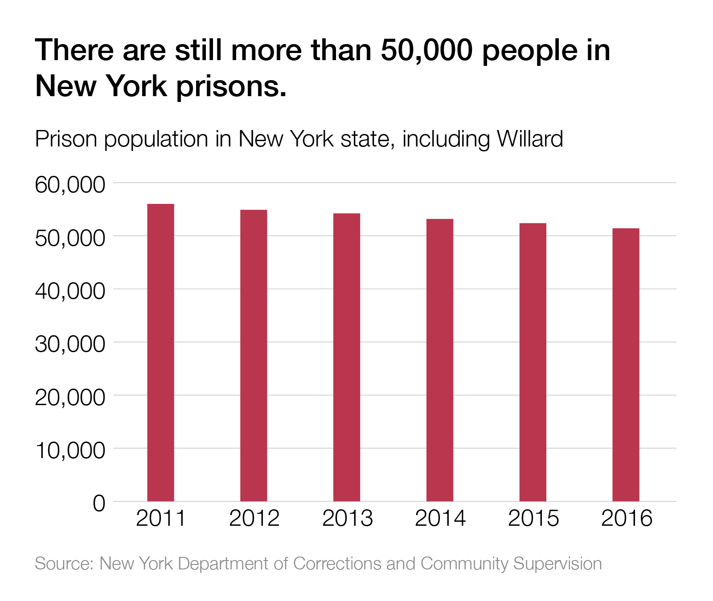

Data
Despite receiving hundreds of applications for clemency and pardons alike over his nearly eight years in office, Governor Cuomo has granted pardons to just 163 people, and commuted the sentences of only a dozen people.

These numbers are pitifully low compared to the more than 50,000 people held in prisons across New York State.
The New York State Constitution grants the governor power to pardon or commute any sentence, at any time, for any reason. Our campaign calls on Governor Cuomo to use the powers of his office to immediately free criminalized survivors of gender violence!